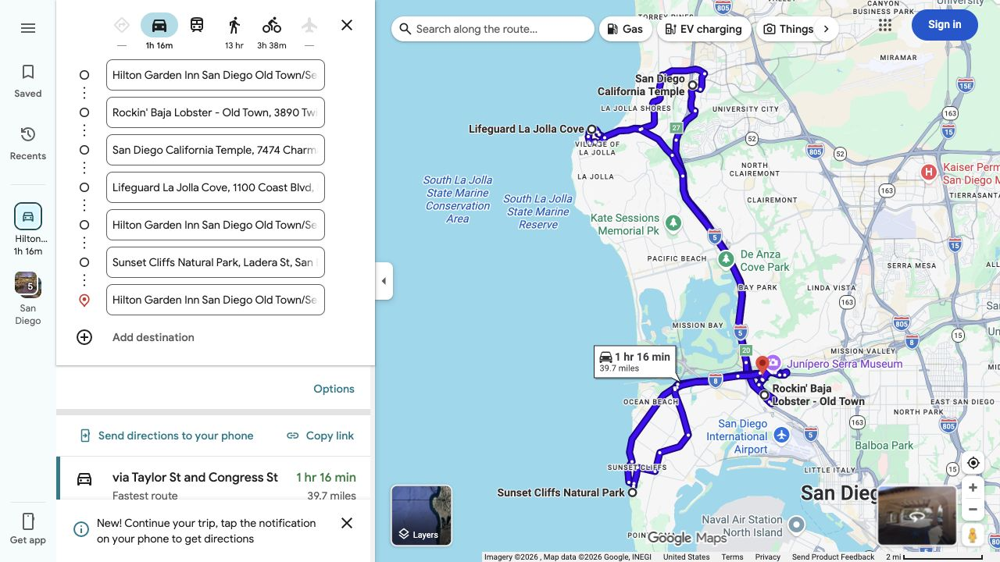
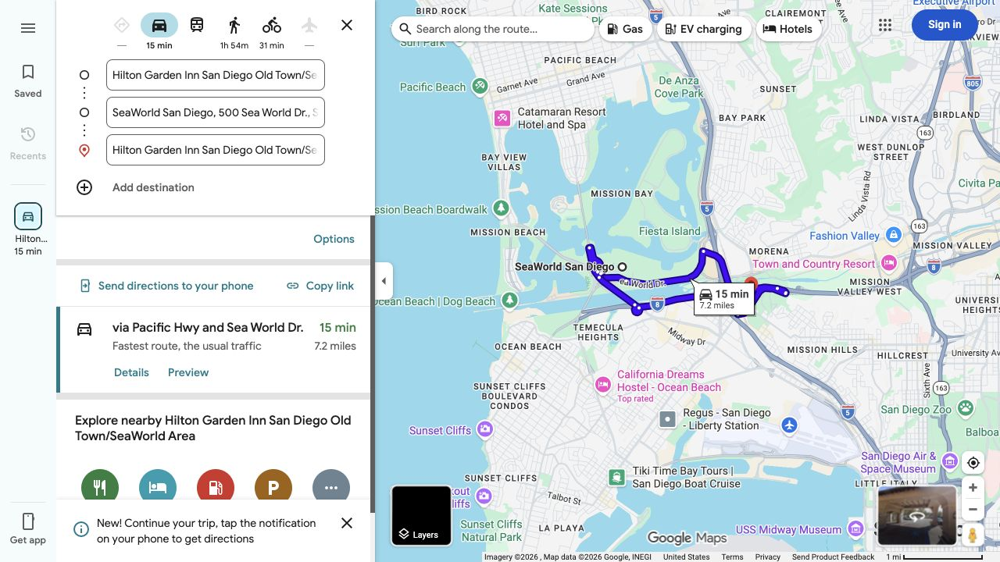
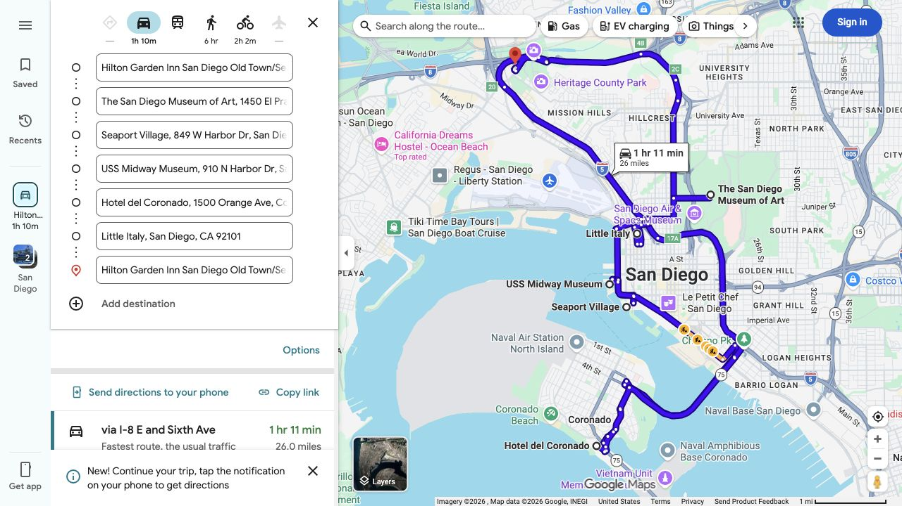

California Graduation Trip
May 29 – June 13, 2026 · SD → LA → Yosemite → SF → Hwy 1 → Santa Barbara
Total days
16
含缓冲日与毕业典礼
Total budget
$10,000
~$2,500/person
Travelers
4
+1 from June 3
Cities
5
SD · LA · Yosemite · SF · SB
你
旅行发起人
全程 · Santa Barbara出发
妈
妈妈
5/29 16:30 LAX落地 · 全程
爸
爸爸
5/29 16:30 LAX落地 · 全程
BF
男友
6/3 11:29 LAX落地 · ORD出发
待办提醒：6/3 11:29 LAX 接机衔接待安排 · Yosemite 入园费用/通行证待确认
航班已预订：父母 5/29 经香港抵达 LAX（16:30），6/15 从 LAX 经香港返武汉；男友 6/3 由 ORD 抵达 LAX（11:29）。
已核验提示（2026-05-23）：Yosemite 2026 年无需 timed-entry reservation；16 岁以上非美国居民可能需额外支付每人 $100 入园费用（除非适用通行证覆盖）。Highway 1 的 Regent's Slide 路段已于 2026-01-14 恢复通车，但出发前仍需复查 Caltrans 道路状态。
Route at a glance
LAX
5/29 16:30 接机
2.5h
SD
San Diego
5/29–6/2
2h
LA
Los Angeles
6/2–6/5
4h
YO
Yosemite
6/5–6/8
3h
SF
San Francisco
6/8–6/10
Hwy 1
BG
Monterey
6/10住宿
3h
Santa Barbara
6/11 · 典礼6/13
Budget snapshot · 实际支出
累计已支付（原币）
USD $1,798.90 + CNY ¥12,537.48
总预算剩余（约）
USD $6,353.07
已支付折算参考
约 USD $3,646.93 / USD $10,000
人民币酒店付款按订单页提供的美元/人民币参考比例折算；SF 与 Monterey 到店待付合计 USD $166.80 尚未计入。
关键待办
- 确认 Yosemite 入园费/通行证选择
- 安排男友 6/3 11:29 LAX 接机衔接
- Hearst Castle 导览预约
Itinerary
每日行程总览 · 16天
5/29周五
转场日 驾车
16:30 LAX 接机；预留入境、补给与途中休息后前往 San Diego 酒店，当晚不排景点
5/30周六
San Diego Day 1 游玩
Old Town + Rockin' Baja Lobster 午餐 → San Diego California Temple 外观 → La Jolla Cove → Sunset Cliffs 日落
5/31周日
San Diego Day 2 游玩
SeaWorld 主题日：以动物展区与表演为主，留足园内休息，离园后不追加正式景点
6/1周一
San Diego Day 3 游玩
San Diego Museum of Art + Balboa Park → Seaport Village / USS Midway 外观 → Coronado → Little Italy 晚餐
6/2周二
SD → LA 驾车 ~2h
上午完成化妆、早餐与装车，11:30 前后出发前往 Los Angeles；途中安排午餐与驾驶休息
6/3周三
Los Angeles Day 1 游玩 男友抵达
男友乘 United Economy 航班从 ORD 于 11:29 抵达 LAX；完成接机后仅保留轻松活动弹性，具体景点待筛选确认
6/4周四
Los Angeles Day 2 游玩
Getty Center 半日 + Griffith Observatory 日落/蓝调拍摄；避免塞入过多城区车程
6/5周五
LA → Yosemite 长途驾车 ~5.5–6.5h
建议早出发并安排途中休息；抵达后仅在 Valley 底部短距离舒展
6/6周六
Yosemite Day 1 游玩
Lower Yosemite Fall / Cook's Meadow 轻量步行 + Valley View 日落；2026 无需 timed-entry reservation
6/7周日
Yosemite Day 2 游玩
可选 Tunnel View 清晨拍摄；白天选择 Mirror Lake 短线或休息，不安排长徒步
6/8周一
Yosemite → SF 驾车 ~4–4.5h
上午离开，下午抵达旧金山
6/9周二
San Francisco Day 1 游玩
Golden Gate 观景点 + Chinatown 午餐 + Pier 39；若选 Alcatraz 则以渡船为当天主活动
6/10周三
SF Day 2 上午 → 下午出发一号公路 Hwy 1
上午留给 SF；午后沿海岸南行，入住已订 Monterey 酒店
6/11周四
一号公路 → Santa Barbara Hwy 1南行
Monterey → Bixby Bridge → Big Sur → 象海豹观景台 → SB；整日景观驾驶，出发前复查 Highway 1
6/12周五
缓冲休息日 Santa Barbara
备考毕业典礼，整理行装，家庭轻松时光
6/13周六
🎓 毕业典礼 Graduation
Santa Barbara · 全家见证
San Diego · 已确认精细日程
固定节奏：每天预留 1 小时化妆；父母国际航班抵达后的首日只做转场；每段通勤均另留停车、入场或休息缓冲。通勤里程与车程来自 2026-05-26 Google Maps 查询，出发当天以实时导航为准。
05/29 周五 · LAX 接机与入住
长途转场日 · 不安排正式景点
时间
安排
通勤 / 缓冲
16:30–18:15
父母抵达 LAX；入境、取行李、会合及补给
国际航班后不压缩等待与休息时间
18:15–18:45
简单晚餐或打包食物
为夜间驾驶准备
18:45–21:45
LAX → San Diego 酒店
长途驾驶；途中至少一次休息
21:45 后
入住 Hilton Garden Inn；洗漱休息
不再追加行程
05/30 周六 · Old Town、La Jolla 与日落
恢复型海岸日 · Sunset Cliffs 19:50 日落
时间
安排
通勤 / 缓冲
08:45–10:25
起床整理、化妆 1 小时、早餐
前一晚长途驾驶后不早起
10:25–11:35
Old Town San Diego State Historic Park
酒店 → Old Town / 餐厅：0.6 mi / 3 min；另留停车步行
11:45–13:05
午餐：Rockin' Baja Lobster - Old Town
3890 Twiggs St；周六官方营业 11:00–21:30
13:05–14:15
San Diego California Temple 外观拍照
餐厅 → Temple：9.7 mi / 12 min；预留停车、构图 40 min
14:15–16:45
La Jolla Cove & Coast Walk
Temple → La Jolla：5.2 mi / 14 min；海岸散步与拍照
16:45–18:35
返回酒店休息/补妆；简单晚餐或轻食
La Jolla → 酒店：10.4 mi / 16 min
18:35–20:10
Sunset Cliffs 黄金时段与日落拍摄
酒店 → Cliffs：7.0 mi / 17 min；提前到场找车位
20:10 后
返回酒店、休息
Cliffs → 酒店：7.0 mi / 15 min
05/31 周日 · SeaWorld
动物与表演主题日 · 不叠加其他正式景点
时间
安排
通勤 / 缓冲
08:30–10:10
起床、化妆 1 小时、早餐及入园准备
携带水、防晒与轻便外套
10:10–10:30
前往 SeaWorld 并停车入场
酒店 → SeaWorld：2.9 mi / 7 min；其余为停车入园缓冲
10:30–17:30
SeaWorld 动物展区与表演
12:30–13:15 园内午餐；15:00–15:20 坐下休息；表演表临行复核
离园后
返回酒店休息；19:00 附近晚餐
SeaWorld → 酒店：4.3 mi / 8 min；不追加景点
06/01 周一 · 艺术、公园、港湾与 Coronado
城市经典日 · Little Italy 收尾晚餐
时间
安排
通勤 / 缓冲
08:30–10:15
起床、化妆 1 小时、早餐
正式景点日前留足准备时间
10:15–13:05
The San Diego Museum of Art + Balboa Park 建筑花园
酒店 → 博物馆：4.9 mi / 11 min；博物馆周一 10:00–17:00 开放
13:05–14:00
午餐与坐下休息
公园内或去港湾途中用餐
14:00–16:20
Seaport Village & Embarcadero；USS Midway 外观打卡
博物馆 → Seaport：2.9 mi / 11 min；Seaport → Midway：0.6 mi / 3 min，亦可步行
16:20–19:00
缓冲后前往 Coronado Beach & Hotel del Coronado
Midway → Hotel del：8.3 mi / 21 min；沙滩与建筑外观拍照
19:00–21:00
Little Italy 晚餐与街区散步
Hotel del → Little Italy：6.7 mi / 15 min
21:00 后
返回酒店、整理次日转场行李
Little Italy → 酒店：4.8 mi / 8 min
06/02 周二 · San Diego → Los Angeles
退房转场日
时间
安排
通勤 / 缓冲
08:30–10:30
起床、化妆 1 小时、早餐及整理行李
不添加 SD 正式景点
10:30–11:30
装车与退房准备
酒店最晚 12:00 退房
11:30 前后
出发前往 Los Angeles
途中按实时路况安排午餐和驾驶休息
Route Planning
城市停留分析 & 驾车距离
城市停留分配
| 城市 | 入住 | 退房 | 游玩天数 | 住宿晚数 | 备注 |
|---|---|---|---|---|---|
| San Diego | 5/29夜 | 6/2早 | 3整天 | 4晚 | 父母时差恢复 |
| Los Angeles | 6/2夜 | 6/5早 | 2整天 | 3晚 | 男友6/3加入 |
| Yosemite | 6/5夜 | 6/8早 | 2整天 | 3晚 | 2026 无预约入园要求 |
| San Francisco | 6/8夜 | 6/10下午 | 1.5天 | 2晚 | 下午出发一号公路 |
| Monterey / Big Sur | 6/10夜 | 6/11早 | — | 1晚 | 一号公路中途住宿 |
| Santa Barbara | 6/11 | — | 2天 | 回家 | 毕业典礼6/13 |
各段驾车信息
| 路段 | 距离 | 时间 | 日期 | 注意事项 |
|---|---|---|---|---|
| LAX → San Diego | ~120 mi | ~2.5h | 5/29晚 | 夜晚驾车，父母刚下飞机，注意休息 |
| San Diego → LA | ~120 mi | ~2h | 6/2 | I-405/I-5，早上出发避开拥堵 |
| LA → Yosemite | ~310 mi | ~5.5–6.5h | 6/5 | 长途日；建议早出发、安排休息，傍晚仅轻量活动 |
| Yosemite → SF | ~190 mi | ~4–4.5h | 6/8 | 常用路线经 CA-120 / CA-99 / I-580；按实时路况选择 |
| SF → Monterey (Hwy 1) | ~120 mi | ~2.5–3h（含停留更长） | 6/10下午 | 已订 Monterey 住宿；可沿海岸抵达，出发前复查路况 |
| Monterey → Santa Barbara (Hwy 1) | ~235 mi | 整日行程（含景点停留） | 6/11 | 经 Big Sur、Cambria；提前加油，出发前复查 Caltrans 状态 |
Attraction Candidate Pool
San Diego 已定案 · 其他城市继续筛选
筛选模式：这里是候选池而不是行程推荐。请勾选你特别想去的景点；后续仅在你确认后，才会把必选点与顺路候选组合进行程。
Yosemite 核心目的地：候选项已特别扩充。NPS 截至 2026-05-21 的状态显示 Glacier Point Road 与 Tioga Road 均已开放；高地服务与道路状态仍需临近出发复查。
San Diego 已确认：5/30 Old Town / Rockin' Baja Lobster / San Diego California Temple 外观 / La Jolla / Sunset Cliffs；5/31 SeaWorld；6/1 Balboa Park + SDMA / Seaport Village / USS Midway 外观 / Coronado / Little Italy。Zoo、Birch Aquarium、Torrey Pines 与 Cabrillo 本次不排。
Hotels & Airbnb
住宿规划 · 共5处换房
本页作为入住速查：显示地址、入住/退房时间、停车信息及英文入住凭证摘要。Airbnb 地址按你的要求显示在工作台中；如同步到公开 GitHub Pages，这些入住地址也会可见。
已预订全部五处住宿：San Diego、Los Angeles、Groveland（Yosemite gateway）、San Francisco 及 Monterey 均已确认。已支付款项为 USD $1,798.90 + CNY ¥12,537.48；SF 与 Monterey 到店待付合计 USD $166.80。入住地址已集中展示；订单号、确认码、客人姓名与付款卡信息不写入公开工作台。
San Diego · Hotel · Hilton Garden Inn San Diego Old Town/Sea World Area / 希尔顿花园酒店-圣迭戈老城/海洋世界区
Old Town / SeaWorld Area
地址：4200 Taylor Street, San Diego, CA 92110
入住 / 退房：5/29 15:00 后入住 · 6/2 12:00 前退房 · 4晚
英文入住凭证：已核验 · 1间 / 4晚 · Room With Two Queen Beds-Hearing Accessible · 2 张 Queen Bed · 不含早餐
停车（查询于 2026-05-25）：自助停车 USD $27.00/天；无代客泊车；可进出、带遮盖/安保并提供 EV charging。全程停 1 辆车参考 USD $108.00，未计入已支付账本。 Hilton 官方信息
取消：5/28 23:59 前可免费取消（酒店当地时间）；此后或未入住，凭证列示取消费 CNY ¥5,709.46。
已预订 · 已支付
CNY ¥5,706.46 已在线付
含税/费 · 积分抵扣 CNY ¥5.00
付款时间：截图未显示，待补充
含税/费 · 积分抵扣 CNY ¥5.00
付款时间：截图未显示，待补充
Los Angeles · Airbnb · Apartment near Universal
房东：Anna · 4 位客人
地址：5814 La Mirada Avenue, Los Angeles（按 Airbnb 入住页面记录）
入住 / 退房：6/2 15:00 入住 · 6/5 11:00 退房 · 3晚
停车：当前订单资料未记录停车方式/费用，需在 Airbnb 房源或入住说明中确认。
取消：6/1 15:00 前可免费取消（房源当地时间）。
已预订 · 已支付
USD $777.35 已付
2026-05-26 07:59:43 (GMT+8)
2026-05-26 07:59:43 (GMT+8)
Groveland / Yosemite · Airbnb · 2 story tree level living, gateway to Yosemite
房东：Krystall & Jason · 4 位客人 · 键盘锁自助入住
地址：19266 Ferretti Road, Groveland（按 Airbnb 入住页面记录）
入住 / 退房：6/5 15:00 入住 · 6/8 10:00 退房 · 3晚
停车：当前订单资料未记录停车方式/费用，需在 Airbnb 房源或入住说明中确认。
取消：页面显示 24 小时内可免费取消；5/29 15:00 前取消可获部分退款。
已预订 · 已支付
USD $1,021.55 已付
2026-05-26 08:00:27 (GMT+8)
2026-05-26 08:00:27 (GMT+8)
San Francisco · Hotel · Riu Plaza Fisherman's Wharf / 渔人码头悦宜湾广场酒店
Fisherman's Wharf 区域
地址：2500 Mason Street, San Francisco, CA 94133
入住 / 退房：6/8 15:00–00:00（次日）入住 · 6/10 12:00 前退房 · 2晚
英文入住凭证：已核验 · 2间 / 2晚 · Deluxe Two Queen Room · 6/9、6/10 均含 2 间房合计 4 份早餐
停车（查询于 2026-05-25）：渠道告示显示最低 USD $53.00 + 税/车/晚，入住或退房时收取，费用可能变动；全程停 1 辆车参考最低 USD $106.00 + 税，未计入已支付账本。 酒店官网 · 停车告示来源
取消：6/4 23:59 前可免费取消（酒店当地时间）；此后或未入住，凭证列示取消费 CNY ¥2,729.50。
已预订 · 部分款项待到店支付
CNY ¥5,390.00 已在线付
积分抵扣 CNY ¥5.00 · 付款时间：截图未显示，待补充
到店待付 USD $164.80（页面约 CNY ¥1,117.92）
积分抵扣 CNY ¥5.00 · 付款时间：截图未显示，待补充
到店待付 USD $164.80（页面约 CNY ¥1,117.92）
Monterey · Hotel · Travelodge by Wyndham Monterey Bay / 蒙特利湾温德姆旅游旅馆
Monterey Bay / North Fremont Street
地址：2030 N Fremont St, Monterey, CA 93940
入住 / 退房：6/10 15:00 后入住 · 6/11 11:00 前退房 · 1晚
停车：订单截图未展示停车方式或费用，入住前需向酒店确认。
取消：6/9 16:00 前可免费取消（酒店当地时间），此后不可取消或修改。
已预订 · 部分款项待到店支付
CNY ¥1,441.02 已在线付
含部分税/费 · 积分抵扣 CNY ¥5.00
到店待付 USD $2.00（页面约 CNY ¥13.58） · 付款时间待补充
含部分税/费 · 积分抵扣 CNY ¥5.00
到店待付 USD $2.00（页面约 CNY ¥13.58） · 付款时间待补充
英文酒店入住凭证（已核验）
两份原始 PDF 含订单号、确认号及客人姓名，保留在本机原文件中，不作为公开页面附件上传；下表记录出行需要的凭证内容。
| 住宿 | 凭证文件 | 已提取的入住内容 |
|---|---|---|
| San Diego Hotel | English check-in voucher (for visa application).pdf | 1 间 / 4 晚；Two Queen Beds-Hearing Accessible；不含早餐；在线已付 CNY ¥5,706.46；5/28 23:59 前免费取消。 |
| San Francisco Hotel | English check-in voucher (for visa application) (1).pdf | 2 间 / 2 晚；Deluxe Two Queen Room；6/9 和 6/10 每日合计 4 份早餐；在线已付 CNY ¥5,390.00，到店另付 USD $164.80；6/4 23:59 前免费取消。 |
已支付住宿款项明细
| 住宿 | 款项构成 | 付款时间 | 已付总额 |
|---|---|---|---|
| San Diego · 5/29–6/2 | 在线已付：CNY ¥5,706.46（含税/费） 其中凭证列示：住宿税 CNY ¥633.50；度假村费 CNY ¥109.07 积分抵扣：CNY ¥5.00 |
截图未显示，待补充 | CNY ¥5,706.46 |
| Los Angeles · 6/2–6/5 | 住宿：USD $224.40 × 3晚 = USD $673.20 税费和平台服务费：USD $104.15 |
2026-05-26 07:59:43 (GMT+8) | USD $777.35 |
| Groveland / Yosemite · 6/5–6/8 | 住宿：USD $270.00 × 3晚 = USD $810.00 Airbnb 服务费：USD $114.35 税费：USD $97.20 |
2026-05-26 08:00:27 (GMT+8) | USD $1,021.55 |
| San Francisco · 6/8–6/10 | 在线已付：CNY ¥5,390.00（含部分税/费） 其中凭证列示：住宿税 CNY ¥649.56；旅游费 CNY ¥171.68 积分抵扣：CNY ¥5.00 到店待付：USD $164.80（其他附加费 USD $24.80；度假村费 USD $140.00；未计入已支付） |
截图未显示，待补充 | CNY ¥5,390.00 |
| Monterey · 6/10–6/11 | 在线已付：CNY ¥1,441.02（含部分税/费） 积分抵扣：CNY ¥5.00 到店待付：USD $2.00（页面约 CNY ¥13.58，未计入已支付） |
截图未显示，待补充 | CNY ¥1,441.02 |
| 累计已支付（按原始币种） | USD $1,798.90 + CNY ¥12,537.48 | ||
Restaurants
当地特色 + 民宿自炊 · 餐位选择框架
已确认偏好：愿意大胆尝试当地特色。San Diego 酒店不含早餐；5/30 Old Town 午餐与 6/1 Little Italy 晚餐已经纳入精细行程，其余时段以不影响观光节奏的轻便餐为主。
| 地点 | 值得安排的特色餐 | 自炊/补给安排 | 节奏建议 |
|---|---|---|---|
| San Diego | 5/30 午餐：Rockin' Baja Lobster - Old Town 3890 Twiggs Street · 墨西哥海鲜 / Baja 风味 6/1 晚餐：Little Italy 区域待择餐厅 |
酒店不含早餐；随车准备水、水果与日落前轻食 | Rockin' Baja 周六官方营业 11:00–21:30；已排 11:45–13:05 |
| Los Angeles | Koreatown 或多元亚洲料理；接机日用灵活餐 | 准备 6/5 长途驾驶早餐和零食 | Griffith 日落日把晚餐排在拍摄后 |
| Yosemite | 以园区便捷餐为备选，不将餐厅作为主目标 | 入园前补足早餐、便携午餐和水 | 拍摄与体力优先，晚餐简单可靠 |
| San Francisco | Chinatown 午餐 + 海鲜/酸面包 | 仅住两晚，不建议大规模采购 | 如选 Alcatraz，渡船日前后就近用餐 |
| Monterey / Highway 1 | Monterey / Carmel 餐饮；公路日带简便午餐 | 出发前备水与零食并补满油 | 不为餐位牺牲白天行车与观景时间 |
Reservations
需提前预订的项目
| 项目 | 城市 | 紧急程度 | 预订状态 | 备注 |
|---|---|---|---|---|
| Yosemite 入园规则确认 | Yosemite | 已核验 | 无需 timed entry | 2026 不使用 timed reservation system；确认成员居民身份与通行证以计算入园费 |
| San Diego 酒店 | San Diego | 已确认 | 已预订 | Hilton Garden Inn San Diego Old Town/Sea World Area；5/29 入住 – 6/2 离店；已在线付 CNY ¥5,706.46（另有积分抵扣 CNY ¥5.00）；5/28 23:59 前可免费取消（酒店当地时间） |
| SeaWorld 单日门票与表演安排 | San Diego | 行程已定 | 门票待确认 | 计划于 5/31 游玩，以动物展区与表演为主；购票前及出发日前按官方日历复核开放时间、表演时刻与设施状态 |
| Los Angeles Airbnb | Los Angeles | 已确认 | 已预订 | Apartment near Universal；6/2 15:00 入住 – 6/5 11:00 退房；已付 USD $777.35 |
| Groveland / Yosemite Airbnb | Yosemite gateway | 已确认 | 已预订 | 2 story tree level living, gateway to Yosemite；6/5 15:00 入住 – 6/8 10:00 退房；已付 USD $1,021.55 |
| San Francisco 酒店 | San Francisco | 已确认 | 已预订 | Riu Plaza Fisherman's Wharf；6/8 入住 – 6/10 离店；已在线付 CNY ¥5,390.00（另有积分抵扣 CNY ¥5.00），到店另付 USD $164.80 |
| Monterey 酒店 | Monterey | 已确认 | 已预订 | Travelodge by Wyndham Monterey Bay；6/10 入住 – 6/11 离店；已在线付 CNY ¥1,441.02（另有积分抵扣 CNY ¥5.00），到店另付 USD $2.00；6/9 16:00 前可免费取消（酒店当地时间） |
| Hearst Castle 导览 | Highway 1 | 建议提前 | 未完成 | 官方建议提前预订；如加入则需为 6/11 留足参观时间 |
| 父母往返机票 | Wuhan / Los Angeles | 已确认 | 已预订 | 5/29 CX937 WUH 12:25 → HKG 14:45；CX882 HKG 18:25 → LAX 16:30。6/15 CX883 LAX 00:25 → HKG 6/16 05:45；CX924 HKG 09:00 → WUH 11:05 |
| 男友抵达航班信息 | Los Angeles | 已确认 | 已预订 | 6/3 United Economy (T)：ORD 08:51 → LAX 11:29，飞行 4h 38m |
| Alcatraz 渡船票 | San Francisco | 建议提前 | 未完成 | 可选；确认后应使用官方 concessioner 购票 |
Google Maps
San Diego 逐日路线图 · 地图截图 & 实时导航入口
San Diego 已生成路线图：下方图片来自 2026-05-26 查询的 Google Maps 行车路线，紫色线路按每日景点顺序串联。图中驾驶总时长不包含用餐、拍照、停车找位和入场缓冲；出发当天请点击实时路线刷新路况。


San Diego 每日逐段车程
| 日期 | 从 → 到 | Google Maps 预计行驶 | 行程缓冲 |
|---|---|---|---|
| 5/30 | 酒店 → Rockin' Baja / Old Town | 0.6 mi / 3 min | 停车与步行已纳入开始前缓冲 |
| Rockin' Baja → San Diego California Temple | 9.7 mi / 12 min | 到达后 40 min 外观拍照 | |
| Temple → La Jolla Cove | 5.2 mi / 14 min | 海岸停车与散步预留 | |
| La Jolla Cove → 酒店 | 10.4 mi / 16 min | 返回后休息/补妆 | |
| 酒店 → Sunset Cliffs | 7.0 mi / 17 min | 日落前提前到场 | |
| Sunset Cliffs → 酒店 | 7.0 mi / 15 min | 拍摄结束直接休息 | |
| 5/31 | 酒店 → SeaWorld | 2.9 mi / 7 min | 另留停车与入园时间 |
| SeaWorld → 酒店 | 4.3 mi / 8 min | 离园后不追加景点 | |
| 6/1 | 酒店 → The San Diego Museum of Art | 4.9 mi / 11 min | 停车入馆缓冲 |
| SDMA → Seaport Village | 2.9 mi / 11 min | 午餐后移动 | |
| Seaport Village → USS Midway | 0.6 mi / 3 min | 可改为沿海湾步行 | |
| USS Midway → Hotel del Coronado | 8.3 mi / 21 min | 过桥与停车缓冲 | |
| Hotel del Coronado → Little Italy | 6.7 mi / 15 min | 晚餐入座缓冲 | |
| Little Italy → 酒店 | 4.8 mi / 8 min | 返回后整理行李 |
后续跨城导航：Highway 1 山体滑坡或天气可能临时改变道路状态，6/10 出发前必须再次查看 Caltrans 路况，并准备 US-101 备选路线。
跨城市导航入口
| 日期 | 导航段 | 重点停靠 | 行动 |
|---|---|---|---|
| 5/29 | LAX → San Diego | 接机后直达住宿 | 打开路线 |
| 6/2 | San Diego → Los Angeles | 按住宿地址更新终点 | 打开路线 |
| 6/5 | Los Angeles → Yosemite Valley | 长途日，至少一次驾驶休息 | 打开路线 |
| 6/8 | Yosemite Valley → San Francisco | 抵达后不排重活动 | 打开路线 |
| 6/10 | San Francisco → Monterey | Half Moon Bay / 17-Mile Drive 可择一 | 打开路线 |
| 6/11 | Monterey → Santa Barbara via Highway 1 | Bixby Bridge / Big Sur / Piedras Blancas | 打开路线 |
Photography
拍摄计划 · 机位 · 光线时间
拍摄原则：人像+景色兼顾，手机拍摄为主，重视光线（日出/日落黄金时段），提前规划服装与场景匹配
黄金时段机位清单
| 地点 | 最佳时段 | 拍摄类型 | 备注 |
|---|---|---|---|
| La Jolla Cove | 日落前1h | 人像+海景 | 光线暖，礁石海豹背景 |
| Griffith Observatory | 日落+蓝调时刻 | 城市夜景+人像 | LA全景，需早到占位 |
| Tunnel View, Yosemite | 日出后1h | 大景+人像 | 薄雾效果绝佳，建议5:30AM到达 |
| Mirror Lake | 清晨无风时 | 倒影+人像 | 6月积雪融水，水量充足 |
| Battery Spencer（金门桥） | 日出/日落 | 大桥全景 | 北侧机位，需驾车过桥到Sausalito |
| Bixby Creek Bridge | 上午顺光 | 人像+公路 | 停车位有限，早到 |
| McWay Falls | 午前 | 瀑布+海湾 | 逆光问题，上午拍摄更好 |
Outfit Planning
各场景穿搭规划
摄影优先但不增加换房负担：按场景准备 4 组主造型，在同一住宿点复用外套和鞋。海岸及 SF 清晨偏凉，Yosemite 清晨拍摄需保暖层。
| 场景/日期 | 人像色调方向 | 实用层次 | 拍摄配合 |
|---|---|---|---|
| SD 海岸 · 5/30 或 6/1 | 白/浅蓝/亚麻色，轻盈海岸感 | 薄外套、防风披肩、易走鞋 | La Jolla 日落与 Coronado 可共用造型 |
| LA 城市 · 6/4 | 简洁黑白或暖色点缀 | 舒适鞋 + Griffith 夜间外套 | Getty 建筑线条与日落城市灯光兼容 |
| Yosemite · 6/6–6/7 | 米色/森林绿/牛仔，避免与景色冲突 | 抓绒或轻羽绒、防滑鞋、防晒 | 清晨造型提前一晚准备，减少父母等待 |
| SF + 一号公路 · 6/9–6/11 | 风衣/针织层，海岸经典色 | 防风外层、围巾、全天舒适鞋 | 金门桥与 Bixby Bridge 可延续同一套外层 |
| 毕业典礼 · 6/13 | 礼服/毕业服所需内搭提前确认 | 另装一套备用正式服与补妆包 | 6/12 单独整理，不与公路行李混放 |
Budget Tracker
总预算 USD $10,000 · 仅记录实际已支付款项
总预算
USD $10,000
四人合计
累计已支付
USD $1,798.90
+ CNY ¥12,537.48
+ CNY ¥12,537.48
原币记录 · 折算约占 36.47%
总预算剩余
约 USD $6,353.07
按已支付款项参考折算
已记录款项
5 笔
住宿在线付款
累计已支付账本
| 款项 | 实际构成 | 付款时间 | 本笔金额 | 累计已支付 |
|---|---|---|---|---|
| San Diego Hotel Hilton Garden Inn San Diego Old Town/Sea World Area · 5/29–6/2 · 4晚 |
在线已付 CNY ¥5,706.46（含税/费） 积分抵扣 CNY ¥5.00 |
截图未显示，待补充 | CNY ¥5,706.46 | CNY ¥5,706.46 |
| Los Angeles Airbnb 6/2–6/5 · 3晚 |
住宿 USD $673.20 税费和平台服务费 USD $104.15 |
2026-05-26 07:59:43 (GMT+8) | USD $777.35 | USD $777.35 + CNY ¥5,706.46 |
| Groveland / Yosemite Airbnb 6/5–6/8 · 3晚 |
住宿 USD $810.00 Airbnb 服务费 USD $114.35 税费 USD $97.20 |
2026-05-26 08:00:27 (GMT+8) | USD $1,021.55 | USD $1,798.90 + CNY ¥5,706.46 |
| San Francisco Hotel Riu Plaza Fisherman's Wharf · 6/8–6/10 · 2晚 |
在线已付 CNY ¥5,390.00（含部分税/费） 积分抵扣 CNY ¥5.00 到店待付 USD $164.80（页面约 CNY ¥1,117.92，未计入累计） |
截图未显示，待补充 | CNY ¥5,390.00 | USD $1,798.90 + CNY ¥11,096.46 |
| Monterey Hotel Travelodge by Wyndham Monterey Bay · 6/10–6/11 · 1晚 |
在线已付 CNY ¥1,441.02（含部分税/费） 积分抵扣 CNY ¥5.00 到店待付 USD $2.00（页面约 CNY ¥13.58，未计入累计） |
截图未显示，待补充 | CNY ¥1,441.02 | USD $1,798.90 + CNY ¥12,537.48 |
| 累计已支付（原币） | USD $1,798.90 + CNY ¥12,537.48 |
|||
总预算剩余
约 USD $6,353.07
累计已支付原币：USD $1,798.90 + CNY ¥12,537.48。为显示 USD 预算余额，既有携程人民币酒店付款沿用 SF 订单参考比例（CNY ¥1,117.92 ≈ USD $164.80），Monterey 本笔按订单页面参考比例（CNY ¥13.58 ≈ USD $2.00）折算；已付折算合计约 USD $3,646.93。SF 与 Monterey 到店待付合计 USD $166.80 尚未计入累计。
Task List
出发前必须完成的事项
🔴 紧急（越快越好）
- 安排男友抵达接机衔接（6/3 11:29，LAX）航班已预订：ORD 08:51 → LAX 11:29
- 确认 Yosemite 入园费与同行者居民/通行证状态2026 年非美国居民（16+）可能涉及每人 $100 附加费
🟡 尽快（出发前2–4周）
- 确认并购买 SeaWorld 5/31 门票；保存当日表演时刻表
- 预约 Hearst Castle 导览（hearstcastle.org）
🟢 出发前一周
- 确认所有Airbnb/酒店预订
- 下载Google Maps离线地图（加州全境）
- Macan检查油量、轮胎、保险
- 规划每日拍照穿搭，准备备用服装
- 确认父母手机国际漫游/购买美国SIM
- 保存 Yosemite 入园费/通行证凭证并下载公园离线信息
- 6/10 出发前复查 Highway 1 / Caltrans 道路状态并保留 US-101 备选